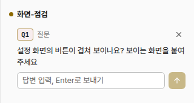

응답할 곳: 총괄 · loom 총괄연 담당: 코디 · 질문여러개v1 · 2026-10-22
답변에 그림 붙이기
사람 지시: 「그리고 답변 입력창에 이미지 입력도 가능하게 해줘」. 질문 줄의 답 입력창에 그림을 붙여넣거나(Ctrl+V) 끌어 놓는다. 알약 목록과 「질문」 탭이 같다. 점선이 바뀌는 곳이다.
지금 시험 데몬 캡처, 「질문」 탭

- 입력창은 글자만 받는다. 그림을 붙여도 아무 일이 없다.
① 그림을 붙인 뒤
이벤트커밋 그래프질문 1
화면-점검
- Q1질문설정 화면의 버튼이 겹쳐 보이나요? 보이는 화면을 붙여 주세요
- 입력창에서 Ctrl+V로 그림을 붙이거나, 그림 파일을 줄 위에 끌어 놓는다. 입력창 위에 작은 그림이 생긴다.
- 그림의 [×]로 그 그림을 뺀다. 그림은 여러 장 붙일 수 있다.
- Enter나 [↑]로 글과 그림을 함께 보낸다. 글 없이 그림만 보내도 된다.
② 끌어 놓는 중
이벤트커밋 그래프질문 1
화면-점검
- Q1질문설정 화면의 버튼이 겹쳐 보이나요? 보이는 화면을 붙여 주세요그림을 놓아 Q1 답에 붙이기그림마다 32MB까지
- 그림을 줄 위로 끌면 그 질문 줄만 점선으로 바뀐다. 그림이 아닌 파일은 받지 않는다.
③ 에이전트가 받는 메시지
loom message #12 (from: human): Answer to loom ask question Q1 (설정 화면의 버튼이 겹쳐 보이나요? …): 왼쪽 위 저장 버튼이 겹칩니다
Images: /tmp/loom-paste/1792601234000000000/image.png /tmp/loom-paste/1792601234100000000/설정.png
The human answered from the loom inbox. The question is closed: do not call loom answered.
- 그림은 데몬 기계에 파일로 남고, 답 메시지에 그 절대 경로가 붙는다. Claude·Codex·Cursor·OpenCode가 경로로 그림을 읽는다.
- 터미널에 그림을 붙여넣을 때와 같은 폴더·같은 상한을 쓴다.
승인할 것
| 정할 것 | 권장 | 다른 안 |
|---|---|---|
| 그림을 두는 곳 | 터미널 붙여넣기와 같은 OS 임시 폴더(loom-paste, OS가 지운다) | loom 데이터 폴더 answers/Q1-1.png(남지만 지우는 규칙이 더 필요하다) |
| 받는 파일 | 그림만 | 모든 파일(터미널 끌어 놓기처럼) |
| 글 없이 그림만 보내기 | 된다 | 글이 있어야 보낸다 |